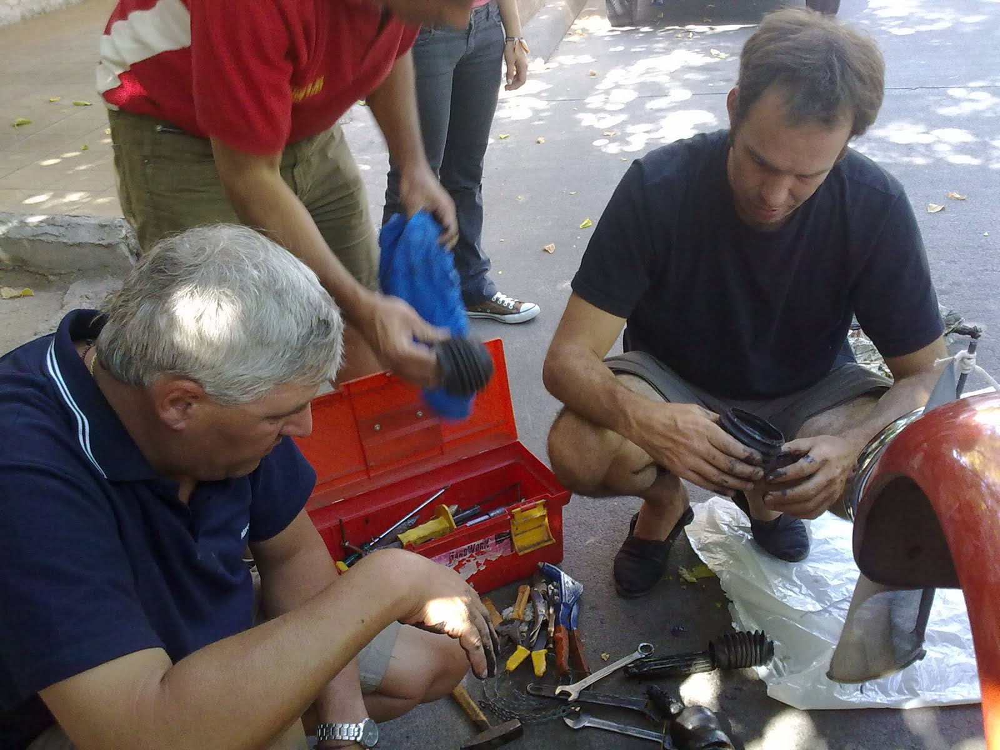
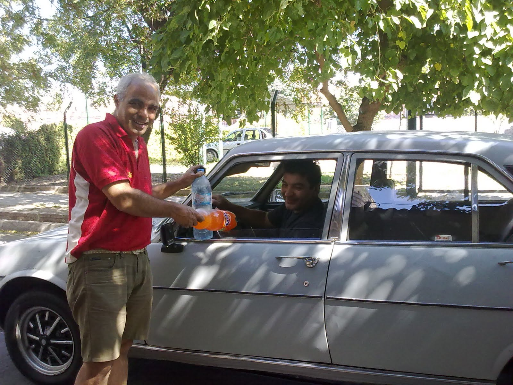
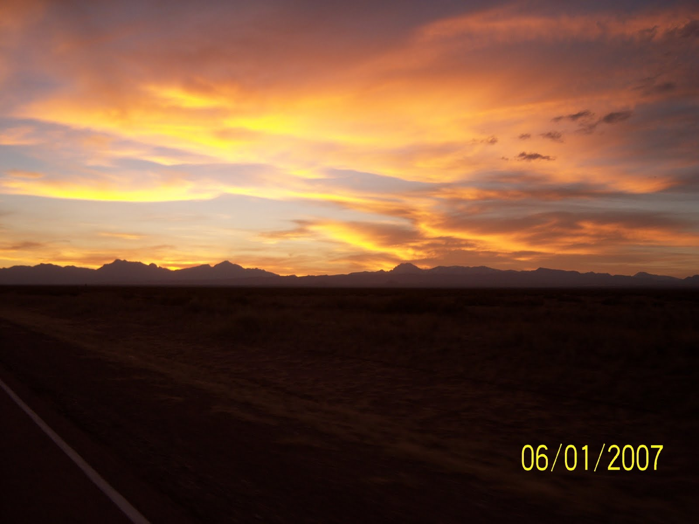
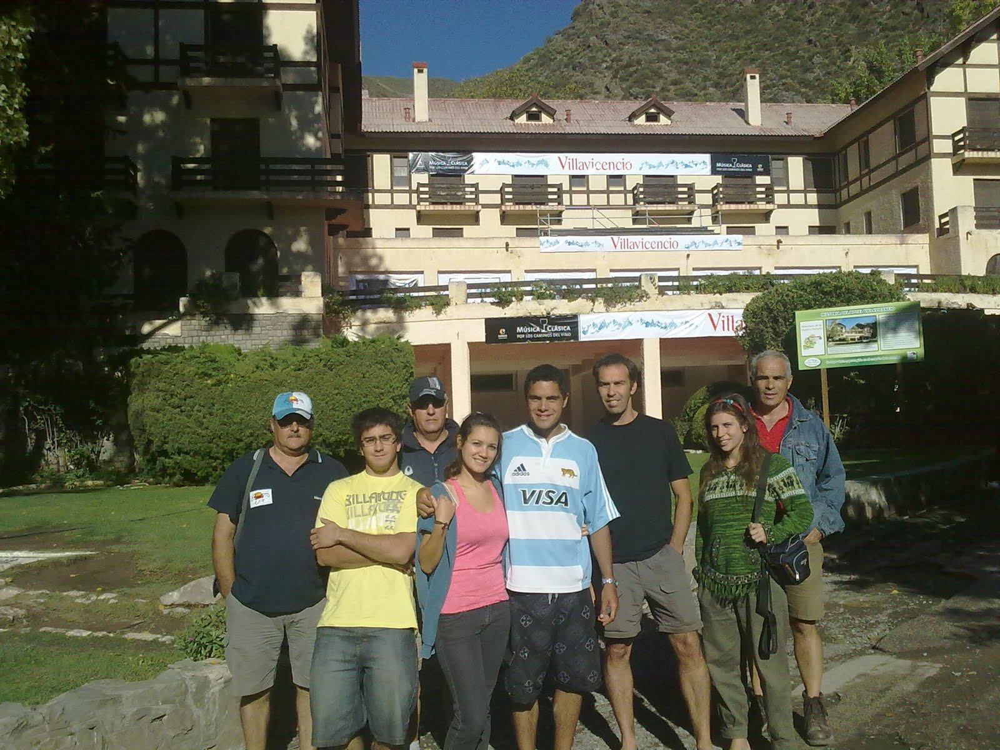

"ElToque de Diana" en la IV Brigada Aérea fue bien temprano como es de rigor. Las Citronaves estaban lista y prestas a la partida con sus equipos de mate y medialunas. El plan del día era iniciar el recorrido hacia las termas de Villavicencio, lugar en donde esta emplazado el antiguo hotel que se ve en las etiquetas del agua mineral. La trepada por las lenguas de los caminos de la montaña se hicieron sin dificultad. Al llegar el Principito tenía una rueda baja, cambiamos por el auxilio, que reparamos luego y seguimos viaje. Mendoza, fue por lejos la ciudad que mas saludos y muestras de aprobación recogieron las Citronaves en su andar. En el transcurso de este relato les voy a contar. A la bajada de Villavicencio el Principito, que no estaba en su mejor día, rompió el semieje. Obviamente, al estar previsto este evento, nos dispusimos al cambio de la pieza, que traíamos como repuesto. La gente de la zona salió de sus casa. Nos ofrecían herramientas y apoyo. En esa circunstancia y por el calor que hacía, paró un Peugeot 504 conducido por Julio Sosa. Como buen "varón" y para nuestra grata sorpresa, nos acercó unas botellas de agua mineral y gaseosa. Un Grande.
Solucionado el inconveniente por Fernando, que continúa con su paciencia infinita la actividad docente - mecánica hacia mi hermano y mi persona, proseguimos el camino hacia Malargüe.
La despedida de Mendoza estuvo plagada de bocinazos y pulgares en alto. Al llegar a Aguas del Toro en la parte previa a los tunees y después de 100km de ripio por la 40, paró una camioneta de la policía para preguntarnos si eramos los de la película. Parece ser que por los finales de Abril se filmará una película, cuya trama cuenta la historia de un padre que no conoce a su hija ,emprenden una travesía en una Citronave por la Ruta 40 y a partir de esta experiencia surge el vinculo. También, pero ya en la represa, paro una camioneta Honda tipo van moderno, que su dueño con mucha emoción nos contó sus experiencias en la Patagonia con su primer auto.... un Citroën 3CV.
A pedido de José, les relato parte del recorrido por este Tramo de la 40. El dice que tuvo la sensación, de haberle abierto la tranquera a los "potros salvajes". En una parte, después de un trepada, surgió ante nuestros ojos la inmensidad de unas lomadas con pastizales amarillos. Mafalda y el Principito salieron raudos por el ripio, pasando una a una las distintas lomadas, levantando polvo al igual que los cascos de los caballos!!!!
Al volver al asfalto camino a Malargüe presenciamos una puesta de sol imponente entre las montañas. Ni las fotos, ni mis palabras lograrán reflejar la verdadera dimensión de aquel cielo.
Pareciera ser que el final de la etapa de laRuta 40 cuyana estuviera presidida por Dios, en ese momento . No se si los budistas, católicos o judíos se acercan a la verdad. Lo que no tengo dudas es que esa puesta de sol era igual que ver a Dios. Dicen los que fueron y volvieron, que cuando uno esta frente a la luz, la sensación de felicidad es máxima. Lo mismo me ocurrió ante esa puesta de sol. Toda mi vida me propuse tratar de ser feliz. Lo que aprendí hasta ahora es que lo divertido no es igual a la felicidad. Que esto solo a la larga, deja un vacío interno, y que los estímulos que la sociedad impone, no hacen otra cosa mas que profundizarlos.... Ese momento de felicidad con la puesta del sol, puede parecerle aburrido a algunos que solo buscan aturdirse a altas velocidades. Este viaje me dio la percepción necesaria para apreciar esos momentos. Perdón. Me puse "filosófico" pero tenia la necesidad de expresarlo.
Lo que fue "espeluzante" como diría Pilín (Pablo Rizzotti), fue la salida de la Luna posterior a esto.
En Malargüe nos estaba esperando la gente de la Dirección de Turismo. Nos alojaron en un complejo estudiantil muy bonito. Uno de los muchachos de la Oficina de Información Turística nos contó que también tiene un 3CV y esta restaurando otros tres. Se imaginaran la alegría que expresó por nuestra presencia.
En San Rafael, con mejor ancho de banda y tiempo, subiré los vídeos, fotos y relatos que me faltan.
Hola Citronautas: Los estamos extrañando! Muchas gracias por las palabras hacia nosotros. La experiencia fue maravillosa! Falta poquito para el reencuentro.
Estamos reclutando gente entusiasta para el próximo año. Condición indispensable: buena visión nocturna para la conducción en los tramos finales de cada etapa. Ya conseguimos dos serenos, el hombre buho y un travesti que trabaja en el rosedal.
José, te parece conseguir como sponsors a linternas eveready? Y no son patrañas...
Un beso grande para todos. Pedro y Noelia